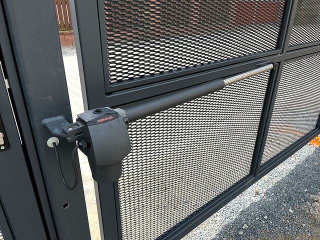

Operators and controls
Gate operator and motor service
We repair and adjust gate operators, motors, remote controls, photocells and control units for sliding and swing gates.
- English communication available
- 30+ years of practice
- Prague and Central Bohemia
Direct answer
What this page answers
Vrata Šnábl services gate operators, motors, remote controls, receivers, photocells and control units. We help decide whether adjustment, repair or operator upgrade is the sensible next step.
What to do next
Call or send a short inquiry with the location, equipment type and a photo if available. That makes the first recommendation faster and more precise. We can also assess equipment we did not originally install; first we check the condition, then recommend repair, adjustment or part replacement.
What we check
- Motor and control unit behaviour.
- Remote controls, receivers and access accessories.
- Photocells, end positions and safety settings.
- Mechanical resistance that overloads the operator.
Operator service must start with diagnostics
Replacing a motor is not always the first answer. We first check whether the fault is in the operator, settings, controls, safety elements or gate mechanics.
If replacement is the best solution, we recommend a suitable motor and install it including commissioning.
Work examples
Real doors, gates and operators in practice
Selected project photos show the type of work we do in Prague and Central Bohemia.


When should I contact Vrata Šnábl?
Contact us when you need service, adjustment, operator repair, installation, upgrade or a new custom-made solution. Based on the equipment condition, we recommend a practical next step.
What should I send for first orientation?
The most useful details are the location, equipment type, short description of the situation and photos of the whole equipment and operator, controls or damaged part.
Need operator service?
The fastest way is to call, describe the equipment and location, and send a photo if you have one. English communication is available.